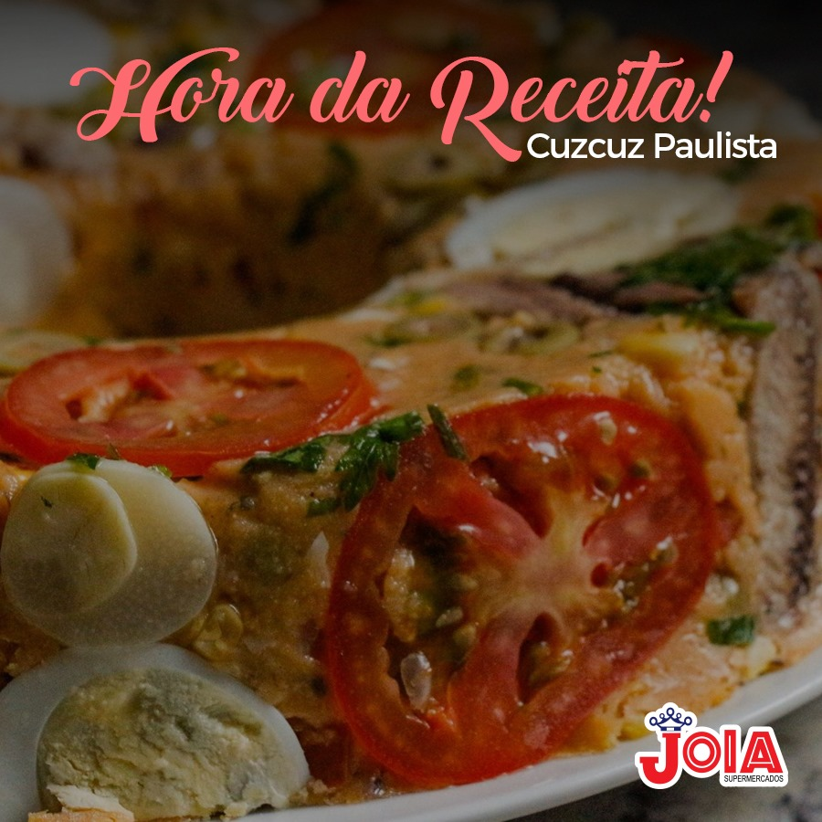

Torta de palmito com requeijão
😋 Ingredientes:

☑ 2 xícaras (chá) de farinha de trigo
☑ 150 g de margarina
☑ 1 gema
☑ 1 lata de creme de leite (sem soro)
☑ 1 colher (chá) sal
☑ 1 gema para pincelar
Recheio
☑ 3 colheres (sopa) de azeite
☑ 1 cebola picada
☑ 1 tomate picado
☑ 1 vidro grande de palmito
☑ 1/2 xícara (chá) de azeitonas
☑ 1/2 xícara (chá) de cheiro verde
☑ 1 pote de requeijão cremoso
☑ 1 colher (sopa) de farinha de trigo
☑ Sal a gosto
😋 Modo de preparo do recheio :
☑ Em uma panela, aqueça o azeite e refogue a cebola.
☑ Junte o tomate picado e frite.
☑ Adicione o palmito, as azeitonas, e o sal.
☑ Cozinhe por alguns minutos. Acrescente o requeijão cremoso, o cheiro verde e a farinha.
☑ Cozinhe por mais alguns minutos. Deixe esfriar.
😋 Modo de preparo da massa:
☑ Em um recipiente, coloque a farinha de trigo (reserve um pouco dela), a margarina, o sal, a gema e o creme de leite.
☑ Misture com as mãos (se for necessário, utilize a farinha reservada para dar o ponto).
☑ Deixe descansar por aproximadamente 10 minutos coberta com um pano.
☑ A seguir, abra parte da massa com auxílio do rolo. Coloque em assadeira redonda de fundo falso.
☑ Coloque o recheio frio. Abra o restante da massa e cubra a torta.
☑ Pincele com a gema. Leve ao forno pré - aquecido (210ºc) por 40 minutos.